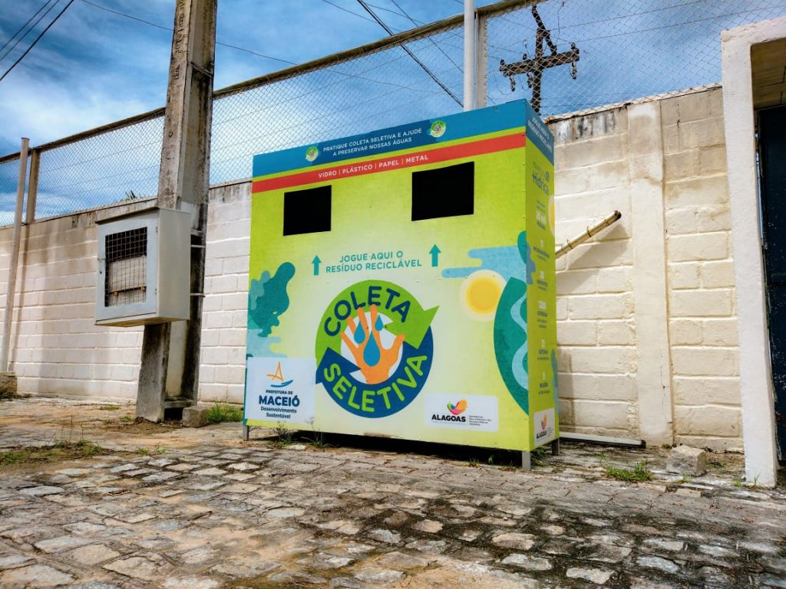

<!DOCTYPE html>
<html lang="en">
<head>
    <meta charset="UTF-8">
    <meta http-equiv="X-UA-Compatible" content="IE=edge">
    <meta name="viewport" content="width=device-width, initial-scale=1.0">
    <title>Document</title> <link rel="stylesheet" href="./style1.css">
</head>
<body> 
  <footer> <div class=".container">
        <header> <nav>
                <a class="nav-link" href="./index.html">HOME</a>
                &nbsp; &nbsp; &nbsp; &nbsp; &nbsp; &nbsp; &nbsp; &nbsp; &nbsp; &nbsp; &nbsp; &nbsp; &nbsp;
              
                <a class="nav-link" href="./cadastro.html">LOGIN</a>
            </nav>
        </header>
        <main></footer>
            <article><footer>
                 <a href="https://www.google.com/maps/dir/-9.5481464,-35.7273884/Ecoponto+-+Santa+L%C3%BAcia+-+Av.+Osvaldo+Ramos,+912+-+Jardim+Petropolis,+Macei%C3%B3+-+AL/@-9.5654018,-35.7611062,14z/data=!3m1!4b1!4m9!4m8!1m1!4e1!1m5!1m1!1s0x7014910cdcd339d:0x3500cb7098f17e01!2m2!1d-35.750472!2d-9.5838954?entry=ttu">     </a>
                
               <h1> Sobre o lixo eletrônico</h1>
                <p>Segundo o documento, o lixo eletrônico global chegará a 74 milhões de toneladas em 2030, quase o dobro dos índices atuais. Não é
                     difícil imaginar como isso acontecerá: smartphones, computadores, tablets, assistentes virtuais, 
                    entre outros dispositivos eletrônicos, estão cada vez mais presentes na rotina de uma família. Muitas vezes, estes produtos têm 
                    prazos curtos de uso, seja pelo conceito de obsolescência programada 
                    ou seja pelo próprio avadnço da tecnologia, que faz com que objetos de pouco tempo de vida logo se tornem antiquados.
                     Quando isso acontece, é necessário dar a correta destinação ao resíduo elet=
                </p>  
                <p><a href="https://www.bing.com/ck/a?!&&p=15d68de024cc6233JmltdHM9MTcwMTczNDQwMCZpZ3VpZD0wMWVlOWI4Ni1lZGM5LTZkZjktMzc3NC04OGY4ZWMxMTZjOWUmaW5zaWQ9NTU4OQ&ptn=3&ver=2&hsh=3&fclid=01ee9b86-edc9-6df9-3774-88f8ec116c9e&u=a1L21hcHM_Jm1lcGk9MTA3fkxvY2FsflVua25vd25-RW50aXR5X1ZlcnRpY2FsX0xpc3RfQ2FyZCZ0eT0xNyZxPWxvY2FsaXphJUMzJUE3JUMzJUEzbyUyMGRlJTIwZGVzY2FydGUlMjBkZSUyMGxpeG8lMjBlbGV0cm9uaWNvJTIwZW0lMjBtYWNlaSVDMyVCMyZzZWdtZW50PUxvY2FsJnBwb2lzPS05LjY2MDc0NTYyMDcyNzUzOV8tMzUuNzM5MzQ5MzY1MjM0Mzc1X0VsZXRyb2x1el9ZTjc5OTN4MjAxMTkzNTU3fi05LjY2OTA5MTIyNDY3MDQxXy0zNS43NDg5NTg1ODc2NDY0ODRfMTAwJTI1JTIwSW5qZSVDMyVBNyVDMyVBM28lMjBFbGV0ciVDMyVCNG5pY2FfWU43OTkzeDExOTA2NTEwMzc4ODM0NDA4ODk0fi05LjY2NzkwMTk5Mjc5Nzg1Ml8tMzUuNzQ0NzYyNDIwNjU0M19OJTIwJTI2JTIwQSUyMEVsZXRyb25pY2FfWU43OTkzeDg0MjIxNTQ3N34mc2VpPTAmY3A9LTkuNjY5MDkxfi0zNS43NDg5NTkmY2hpbGQ9JTI2dHklM0QxOCUyNnElM0QxMDAlMjUyNSUyNTIwSW5qZSUyNUMzJTI1QTclMjVDMyUyNUEzbyUyNTIwRWxldHIlMjVDMyUyNUI0bmljYSUyNTIwZGVzY2FydGUlMjUyMGRlJTI1MjBsaXhvJTI1MjBlbGV0cm9uaWNvJTI2c3MlM0R5cGlkLllONzk5M3gxMTkwNjUxMDM3ODgzNDQwODg5NCUyNnNlZ21lbnQlM0RMb2NhbCUyNnBwb2lzJTNELTkuNjY5MDkxMjI0NjcwNDFfLTM1Ljc0ODk1ODU4NzY0NjQ4NF8xMDAlMjUyNSUyNTIwSW5qZSUyNUMzJTI1QTclMjVDMyUyNUEzbyUyNTIwRWxldHIlMjVDMyUyNUI0bmljYSUyNTIwZGVzY2FydGUlMjUyMGRlJTI1MjBsaXhvJTI1MjBlbGV0cm9uaWNvX1lONzk5M3gxMTkwNjUxMDM3ODgzNDQwODg5NH4lMjZjcCUzRC05LjY2OTA5MX4tMzUuNzQ4OTU5JTI2RW5hYmxlTWFwVmlld0NoYW5nZSUzRHRydWUmRk9STT1TTkFQU1Q&ntb=1"></a>
                <p>Lixo eletrônico, também conhecido como resíduo computacional ou e-lixo (e-waste em inglês), é o termo designado para o descarte de
                     dispositivos que funcionam através de energia elétrica, pilhas ou baterias. Para tal, estes aparelhos apresentam em sua composição
                      materiais como cobre, ouro, mercúrio e, em alguns casos, até mesmo gases, gerando uma problemática relacionada à forma correta de 
                    realizar seu descarte desde os anos 1970. De lá pra cá, o interesse por este assunto só aumentou, visto que a quantidade de aparelhos
                     eletrônicos em circulação, e seu consequente descarte, têm atingido proporções cada vez maiores. Antes, o descarte de aparelhos
                     eletrônicos era realizado quanto estes paravam de funcionar ou apresentavam defeito sem possibilidade de conserto. No entanto, nos 
                      dias atuais, a troca de aparelhos eletrônicos ocorre de forma constante, pois a produção acelerada e o lançamento de novas tecnologias 
                        tornam versões prévias, especialmente de celulares e computadores, rapidamente obsoletas. Isto, por sua vez, gera um significativo
                     impacto ambiental, visto que os rejeitos eletrônicos levam muito tempo para ser decompostos na natureza.
                </p></footer>
            </article>
        </main>
        <footer>
        
    </div>
</body>
</html>